European
Southern
Observatory

The giant ELT dome will house the telescope and its interior structure, providing protection from the extreme environment of Chile's Atacama Desert.
The dome will be about 80 metres high and have a diameter of about 93 metres, giving it a footprint roughly equivalent to that of a football pitch. The upper part of the dome will rotate to allow the telescope to point in any direction through its large observing slit.
The dome will be about 80 metres high and have a diameter of about 93 metres, giving it a footprint roughly equivalent to that of a football pitch. The upper part of the dome will rotate to allow the telescope to point in any direction through its large observing slit.
The sensitive and delicate components of the most sophisticated telescope ground-based astronomy has ever seen require special protection. This is especially true in the rough desert environment, with potentially damaging sand and wind, and in a country that is prone to earthquakes.
The ELT dome shelters the telescope in windy conditions during observations and protects it and its delicate optics from the elements during the day. It consists of a lower fixed part, the concrete pier, a rotating upper part, and the enclosure, which is equipped with two motorised slit doors that open laterally to allow observations of the night sky.
The dome enclosure has a thermally insulated cladding made of aluminium, which allows thermal conditioning of the telescope chamber during the day and limits radiative cooling during the night. This rotating structure is also equipped with special cranes to allow handling operations during the day when the slits are closed.
The pier of the dome is surrounded by an auxiliary building, with the instrument assembly area and the entrance hall facing south, downstream of the prevailing wind. The various electrical, thermal, and hydraulic plants used to operate the dome and the telescope are distributed in different rooms of the building. The remaining rooms are used for mirror segment storage, computer rooms, and to host a facility for mirror coating.
The overall building is protected against major earthquakes. Both the dome pier and the auxiliary building rest on shock absorbers mounted on top of the foundations to dampen earthquake vibrations.
Please check the News & Multimedia section for recent news, images and videos of the ELT dome.
For precise astronomical observations that reach various target objects in the night sky, the dome will need to move fast, while avoiding vibrations.
The telescope needs to be able to track about the 1-degree zenithal avoidance locus and preset to a new target within 5 minutes. This requires the enclosure to accelerate and move at angular speeds of up to 2 degrees/s (the linear speed at the outer diameter being ap-proximately 5 km/h), which poses considerable challenges to the motorisation system and its braking devices, and demands the implementation of various safety provisions. The enclosure rotates independently from the telescope structure, and sufficient mechanical clearance is guaranteed to allow the complete movement of the telescope within the open or closed dome. The dome design allows observations from zenith down to 20 degrees from the horizon.

To avoid vibration during the rotation of the enclosure, the rotating mechanism is, to the extent possible, structurally decoupled from the dome concrete base. In addition, the possible propagation of vibrations from the dome foundation to the telescope pier, via the seismic isolators and the rock substrate, has been studied in detail to ensure a smooth and vibration-free movement and to guarantee the required precision of the telescope tracking during observation.
The ELT dome is a giant, extending about 80 meters from the ground and measuring 93 metres in diameter.
The rotating enclosure, once fully equipped and finished, will have a mass of around 6100 tons, and it will rotate on 36 stationary trolleys mounted above the pier at a height of 11m from the ground.The structure itself consists of a round girder with a special track at its bottom that rests on the wheels of the trolleys. The primary structure of the enclosure is completed by three structural arches resting on the round girder, one at each side of the slit and one at the back. The enclosure structure, which will be bolted together on site, is closed by a number of secondary beams which will allow the assembly of the insulated aluminum cladding. A complex series of accesses inside the structure and the slit doors allows engineers to reach all mechanisms of the doors, ventilation louvers, and installed equipment.
The enclosure's slit doors, that open to allow observations of the night sky, move on three rails each, one at the round girder and two at the top. The doors provide an aperture of 41 m when open, and their system motors have sufficient redundancy to ensure the doors can be closed when needed, in all conditions. In addition, the doors will be equipped with latching mechanisms to achieve structural continuity and with special inflatable seals to guarantee environmental tightness when closed.
Engineers have carried out wind tunnel tests to compute the pressure forces acting on the structure in operational conditions (doors open) as well in survival conditions (doors closed). The structure has also been verified against earthquakes and snow loads.

Windscreen
Since the ELT dome has a large opening, it requires a windscreen to protect the telescope's primary and secondary mirrors from direct wind exposure, which could negatively affect the pointing performance of the telescope. The windscreen reduces the overall wind speed and, thanks to its permeability, produces a quasi-laminar flow across the telescope optics to avoid degrading seeing effects. The windscreen design is based on four curved plate segments that can be moved up and down depending on the inclination of the telescope. For reliability and safety reasons, redundancy has been implemented in the windscreen mechanism. The windscreen segments are stored at the level of the enclosure ring, when retracted in the lowest position.
Ventilation and Air Conditioning
The ELT dome has been designed to allow sufficient ventilation for the telescope not to be limited by dome seeing. It is equipped with ventilation louvers that, together with the windscreen, allow the modulation of the air flow inside the dome. The louvers are distributed laterally to the doors and also at the back of the telescope. The first ring of louvers is located in the pier, just above the auxiliary building, which allows air to be flushed below the primary mirror.
Engineers have performed simulations to study the airflow in and around the dome and the movement of the air depending on the direction of the wind with respect to the direction of observation.To avoid pockets of warm air, the pavement in the area between the piers of the dome and of the telescope has been decoupled from the rock temperature through the use of special thermal insulation. When the slit doors are closed, special seals avoid air exchange and prevent dust from entering the enclosure.
A powerful air conditioning system allows the regulation of air temperature inside the enclosure and of the telescope structure. To minimise seeing effects and thermal deformation of the telescope structure, this air conditioning system sets the temperature inside the dome to that expected outside at the time of opening the doors shortly after sunset. The system uses a chiller plant, located at the side of the telescope plateau, that rejects any residual heat down-stream of the prevailing wind, sufficiently far away from the telescope.
Cooling the telescope during the day is critical for operation. The air conditioning system can cool the telescope and dome internal volume by 10°C during 12 hours, even as heat from the Sun warms up the enclosure. To minimise the amount of heat transmitted inside the enclosure, an insulating layer will be inserted between the external aluminum cladding and the inner lining of the enclosure.
| Height of the dome | 80 m |
| Diameter of the dome | 93 m |
| Diameter of the auxiliary building | 117 m |
| Height of the dome pier | 11 m |
| Mass of the rotating enclosure | 6100 t |
| Number of trolleys for rotation | 36 |
| Dimension of each trolley | 4x2x3 m |
| Mass of each trolley | 27 t |
| Length of the track of dome | 270 m |
| Door dimensions (w x h) | 23x55 m |
| Mass of each door | 600 t |
| Number of ventilation louvers in dome pier | 89 |
| Area of the ventilation louvers | 1240 m2 |
| Number of seismic isolators | 118 |
| Heating, ventilation, and air conditioning system cooling power | 3 MW |